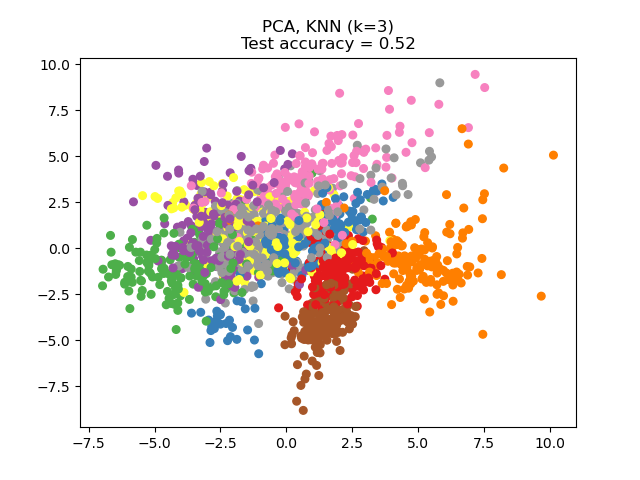
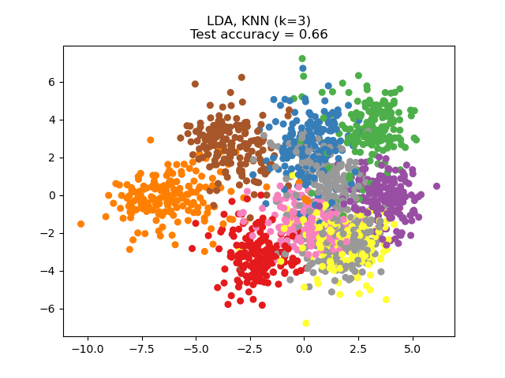

Nota
Haz clic aquí para descargar el código completo del ejemplo o para ejecutar este ejemplo en tu navegador a través de Binder
Reducción de dimensionalidad con Análisis de Componentes de Vecindario (Neighborhood Components Analysis)¶
Ejemplo de uso de Análisis de Componentes de Vecindario (Neighborhood Components Analysis) para reducción de dimensionalidad.
Este ejemplo compara diferentes métodos (lineales) de reducción de dimensionalidad aplicados al conjunto de datos Digits. El conjunto de datos contiene imágenes de dígitos del 0 al 9 con aproximadamente 180 muestras de cada clase. Cada imagen tiene una dimensión de 8x8 = 64, y se reduce a un punto de datos bidimensional.
El Análisis de Componentes Principales (Principal Component Analysis, PCA) aplicado a estos datos identifica la combinación de atributos (componentes principales, o direcciones en el espacio de características) que explican la mayor varianza de los datos. Aquí representamos las diferentes muestras en los 2 primeros componentes principales.
El Análisis Discriminante Lineal (Linear Discriminant Analysis, LDA) trata de identificar los atributos que explican la mayor varianza entre las clases. En concreto, el LDA, a diferencia del PCA, es un método supervisado que utiliza etiquetas de clase conocidas.
El Análisis de Componentes de Vecindario (Neighborhood Components Analysis, NCA) trata de encontrar un espacio de características tal que un algoritmo estocástico de vecino más cercano dé la mejor exactitud. Al igual que el LDA, es un método supervisado.
Se puede ver que el NCA impone un agrupamiento de los datos que es visualmente significativa a pesar de la gran reducción en la dimensión.
- 
- 

# License: BSD 3 clause
import numpy as np
import matplotlib.pyplot as plt
from sklearn import datasets
from sklearn.model_selection import train_test_split
from sklearn.decomposition import PCA
from sklearn.discriminant_analysis import LinearDiscriminantAnalysis
from sklearn.neighbors import (KNeighborsClassifier,
NeighborhoodComponentsAnalysis)
from sklearn.pipeline import make_pipeline
from sklearn.preprocessing import StandardScaler
print(__doc__)
n_neighbors = 3
random_state = 0
# Load Digits dataset
X, y = datasets.load_digits(return_X_y=True)
# Split into train/test
X_train, X_test, y_train, y_test = \
train_test_split(X, y, test_size=0.5, stratify=y,
random_state=random_state)
dim = len(X[0])
n_classes = len(np.unique(y))
# Reduce dimension to 2 with PCA
pca = make_pipeline(StandardScaler(),
PCA(n_components=2, random_state=random_state))
# Reduce dimension to 2 with LinearDiscriminantAnalysis
lda = make_pipeline(StandardScaler(),
LinearDiscriminantAnalysis(n_components=2))
# Reduce dimension to 2 with NeighborhoodComponentAnalysis
nca = make_pipeline(StandardScaler(),
NeighborhoodComponentsAnalysis(n_components=2,
random_state=random_state))
# Use a nearest neighbor classifier to evaluate the methods
knn = KNeighborsClassifier(n_neighbors=n_neighbors)
# Make a list of the methods to be compared
dim_reduction_methods = [('PCA', pca), ('LDA', lda), ('NCA', nca)]
# plt.figure()
for i, (name, model) in enumerate(dim_reduction_methods):
plt.figure()
# plt.subplot(1, 3, i + 1, aspect=1)
# Fit the method's model
model.fit(X_train, y_train)
# Fit a nearest neighbor classifier on the embedded training set
knn.fit(model.transform(X_train), y_train)
# Compute the nearest neighbor accuracy on the embedded test set
acc_knn = knn.score(model.transform(X_test), y_test)
# Embed the data set in 2 dimensions using the fitted model
X_embedded = model.transform(X)
# Plot the projected points and show the evaluation score
plt.scatter(X_embedded[:, 0], X_embedded[:, 1], c=y, s=30, cmap='Set1')
plt.title("{}, KNN (k={})\nTest accuracy = {:.2f}".format(name,
n_neighbors,
acc_knn))
plt.show()
Tiempo total de ejecución del script: (0 minutos 3.374 segundos)